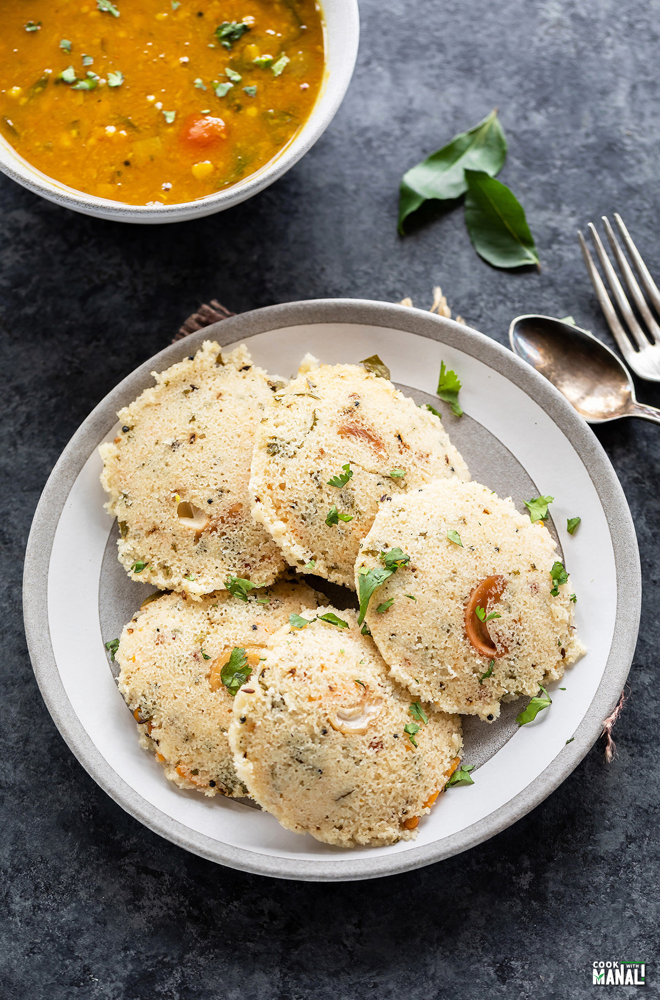

Rava Idli

Description
Rava idli or sooji idli is instant idli made with rava/sooji (semolina). This idli needs no fermentation and the
batter gets the rise from the use of eno (fruit salt). The interaction between eno and yogurt leavens the
batter.
Semolina is roasted with seasonings like curry leaves, mustard seeds, cumin seeds, ginger and then mixed with
yogurt and eno. Veggies like carrots, peas are also often added to it.
Once the batter is ready, it is then steamed and served with sambar and chutneys. Unlike the traditional idli,
you can enjoy a plate of rava idli in less than an hour!
Ingredients
- Rava/Sooji: semolina is the main ingredient for these idlis, I have used regular rava which I use to make
upma for this recipe. Fine rava will work fine as well.
- Spices and seasonings: the idli is seasoned and flavored with ginger, curry leaves, mustard seeds, cumin
seeds, hing, chana dal.
- Veggies: for this rava idli recipe, I have used grated carrots but you can also add onion, peas, beetroot.
- ENO: aka fruit salt is the leavening agent that’s used in the recipe. You need plain eno for this recipe and
you can find it at Indian grocery stores.
Steps
- Heat 2 tablespoons oil or ghee in a pan on medium heat. Once hot, add 12 raw cashews and fry them until
they
turn golden in color. Then remove them from the pan onto a plate.
- To the same pan now add 1/2 teaspoon mustard seeds and 1/4 teaspoon cumin seeds. Let the mustard seeds pop
and cumin seeds sizzle. Then add:
generous pinch of hing
1 teaspoon chopped ginger
1 chopped green chili
- Sauté 30 seconds, then add 1 teaspoon chana dal. Sauté 30 to 40 seconds and then add around 12 curry
leaves.
- Stir and add 1 cup rava/sooji. Mix well so that all the spices are well combined with the rava.
- Stirring continuously, roast the rava for 5 to 6 minutes until the raw smell goes away and it’s well
roasted.
Be careful that the rava doesn’t burn so stir constantly while doing so. You can skip this step of roasting
if
using pre-roasted rava.
- Remove pan from heat and transfer the roasted rava to a large bowl. Let it cool down. Once it has cooled
down, add the following:
1/2 teaspoon salt
2 tablespoons grated carrots
2 tablespoons chopped cilantro
- Then add 3/4 cup plain yogurt and stir.
- Add around 1/2 cup water and whisk to make a smooth batter.
- The consistency of the batter should be like idli batter, not super thick and not thin either.
- At this point, cover the bowl with a plate and let it rest for 20 minutes.
- After 20 minutes, remove the plate. The rava would have absorbed the water and become quite thick. Add 3 to
5 tablespoons more water at this point to make a smooth batter. Meanwhile, add 2 to 3 cups in your steamer
and
put the water to boil. Also grease your idli plates with oil.
- Add 1 teaspoon ENO (fruit salt).
- Mix well, you will notice the batter becomes light as soon as you add the eno. You have to steam the batter
immediately after adding the eno, so have everything ready (greased idli plates, steamer ready to go) before
you
add eno.
- Place 1 fried cashew in each compartment of the idli plates. Now, fill each of them with the prepared
batter. Don’t overfill too much as the batter expands during steaming.
- Place the idli plates in the steamer. Cover and steam on high heat for 10 to 12 minutes.
- You will know the idlis are done when you insert a knife in one of the idlis and it comes out clean. Remove
plates from the steamer, let them sit for 5 minutes and then carefully remove from plates. I like to slide a
silicone spatula or one of those cake spatulas underneath to take them put. Enjoy with sambar and chutney!
HOME